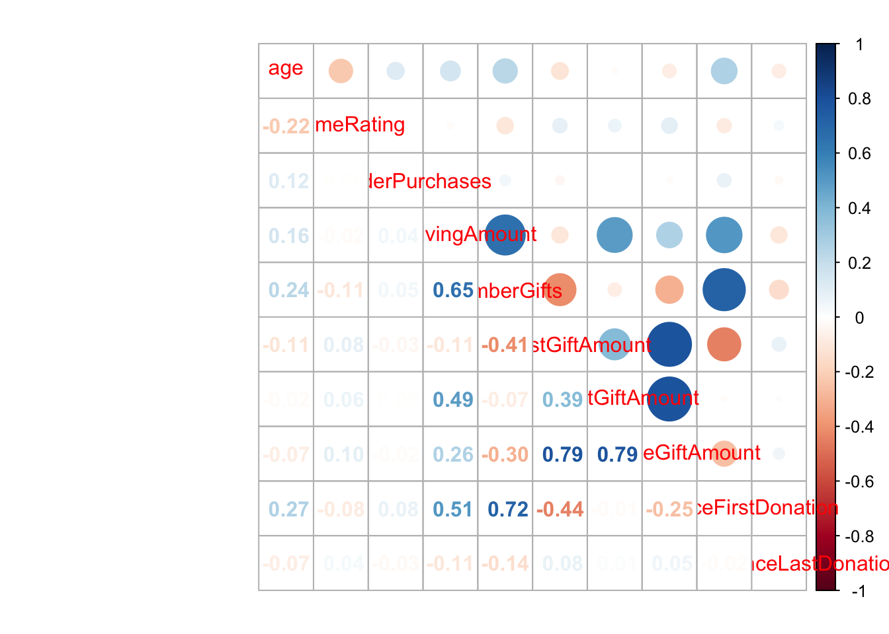

rm(list = ls())
library(tidyverse)
library(caret)
library(dummy)
library(gamlr)
library(rmarkdown)
library(rpart)
library(pROC)
library(ggthemes)
library(corrplot)
library(AppliedPredictiveModeling)Problem Set 4
Part 1
Classification is the right approach for NVO’s problem. The reason for this is because we are trying to predict discrete values using this dataset. These values are whether or not a person will respond to a mailing. We are not focusing on the predicted numbers and their root mean squared errors like we do with regression for we are looking at the accuracy of the dataset. Our goal is to target and focus on individuals that will likely answer increase NVO’s response rate.
donors = read_csv("donors.csv")Rows: 95412 Columns: 22
── Column specification ────────────────────────────────────────────────────────
Delimiter: ","
chr (4): state, urbanicity, socioEconomicStatus, gender
dbl (12): age, numberChildren, incomeRating, wealthRating, mailOrderPurchase...
lgl (6): inHouseDonor, plannedGivingDonor, sweepstakesDonor, P3Donor, isHom...
ℹ Use `spec()` to retrieve the full column specification for this data.
ℹ Specify the column types or set `show_col_types = FALSE` to quiet this message.glimpse(donors)Rows: 95,412
Columns: 22
$ age <dbl> 60, 46, NA, 70, 78, NA, 38, NA, NA, 65, NA, 75…
$ numberChildren <dbl> NA, 1, NA, NA, 1, NA, 1, NA, NA, NA, NA, NA, 2…
$ incomeRating <dbl> NA, 6, 3, 1, 3, NA, 4, 2, 3, NA, 2, 1, 4, NA, …
$ wealthRating <dbl> NA, 9, 1, 4, 2, NA, 6, 9, 2, NA, 0, 5, 2, NA, …
$ mailOrderPurchases <dbl> 0, 16, 2, 2, 60, 0, 0, 1, 0, 0, 0, 3, 16, 0, 1…
$ totalGivingAmount <dbl> 240, 47, 202, 109, 254, 51, 107, 31, 199, 28, …
$ numberGifts <dbl> 31, 3, 27, 16, 37, 4, 14, 5, 11, 3, 1, 2, 9, 1…
$ smallestGiftAmount <dbl> 5, 10, 2, 2, 3, 10, 3, 5, 10, 3, 20, 10, 4, 5,…
$ largestGiftAmount <dbl> 12, 25, 16, 11, 15, 16, 12, 11, 22, 15, 20, 15…
$ averageGiftAmount <dbl> 7.741935, 15.666667, 7.481481, 6.812500, 6.864…
$ yearsSinceFirstDonation <dbl> 8, 3, 7, 10, 11, 3, 10, 3, 9, 3, 1, 1, 8, 5, 4…
$ monthsSinceLastDonation <dbl> 14, 14, 14, 14, 13, 20, 22, 18, 19, 22, 12, 14…
$ inHouseDonor <lgl> FALSE, FALSE, FALSE, FALSE, TRUE, FALSE, FALSE…
$ plannedGivingDonor <lgl> FALSE, FALSE, FALSE, FALSE, FALSE, FALSE, FALS…
$ sweepstakesDonor <lgl> FALSE, FALSE, FALSE, FALSE, FALSE, FALSE, FALS…
$ P3Donor <lgl> FALSE, FALSE, FALSE, FALSE, TRUE, FALSE, FALSE…
$ state <chr> "IL", "CA", "NC", "CA", "FL", "AL", "IN", "LA"…
$ urbanicity <chr> "town", "suburb", "rural", "rural", "suburb", …
$ socioEconomicStatus <chr> "average", "highest", "average", "average", "a…
$ isHomeowner <lgl> NA, TRUE, NA, NA, TRUE, NA, TRUE, NA, NA, NA, …
$ gender <chr> "female", "male", "male", "female", "female", …
$ respondedMailing <lgl> FALSE, FALSE, FALSE, FALSE, FALSE, FALSE, FALS…Part 2
This classifier being built to identify potential donors for NVO will be better to use due to the accuracy it could develop. The reason for this is due to us having the ability to exclude features that may not have much significance to help make predictions in the dataset. As we select certain features to use and to remove, we can train and split the data up further to aim for the accuracy we hope to achieve. We get to focus on the separate classes within the data and not just all of the data within the dataset as a whole.
summary(donors) age numberChildren incomeRating wealthRating
Min. : 1.00 Min. :1.00 Min. :1.000 Min. :0.00
1st Qu.:48.00 1st Qu.:1.00 1st Qu.:2.000 1st Qu.:3.00
Median :62.00 Median :1.00 Median :4.000 Median :6.00
Mean :61.61 Mean :1.53 Mean :3.886 Mean :5.35
3rd Qu.:75.00 3rd Qu.:2.00 3rd Qu.:5.000 3rd Qu.:8.00
Max. :98.00 Max. :7.00 Max. :7.000 Max. :9.00
NA's :23665 NA's :83026 NA's :21286 NA's :44732
mailOrderPurchases totalGivingAmount numberGifts smallestGiftAmount
Min. : 0.000 Min. : 13.0 Min. : 1.000 Min. : 0.000
1st Qu.: 0.000 1st Qu.: 40.0 1st Qu.: 3.000 1st Qu.: 3.000
Median : 0.000 Median : 78.0 Median : 7.000 Median : 5.000
Mean : 3.321 Mean : 104.5 Mean : 9.602 Mean : 7.934
3rd Qu.: 3.000 3rd Qu.: 131.0 3rd Qu.: 13.000 3rd Qu.: 10.000
Max. :241.000 Max. :9485.0 Max. :237.000 Max. :1000.000
largestGiftAmount averageGiftAmount yearsSinceFirstDonation
Min. : 5 Min. : 1.286 Min. : 0.000
1st Qu.: 14 1st Qu.: 8.385 1st Qu.: 2.000
Median : 17 Median : 11.636 Median : 5.000
Mean : 20 Mean : 13.348 Mean : 5.596
3rd Qu.: 23 3rd Qu.: 15.478 3rd Qu.: 9.000
Max. :5000 Max. :1000.000 Max. :13.000
monthsSinceLastDonation inHouseDonor plannedGivingDonor sweepstakesDonor
Min. : 0.00 Mode :logical Mode :logical Mode :logical
1st Qu.:12.00 FALSE:88709 FALSE:95298 FALSE:93795
Median :14.00 TRUE :6703 TRUE :114 TRUE :1617
Mean :14.36
3rd Qu.:17.00
Max. :23.00
P3Donor state urbanicity socioEconomicStatus
Mode :logical Length:95412 Length:95412 Length:95412
FALSE:93395 Class :character Class :character Class :character
TRUE :2017 Mode :character Mode :character Mode :character
isHomeowner gender respondedMailing
Mode:logical Length:95412 Mode :logical
TRUE:52354 Class :character FALSE:90569
NA's:43058 Mode :character TRUE :4843
Part 3
The most important measures from the confusion matrix that I will use to evaluate the classifier performance will be Accuracy, Sensitivity (Recall), and Post Pred Value (Precision). Since our goal is to not miss out on individuals who will actually respond, being more accurate is not going to be the only outstanding factor of our model. Recall and Precision will allow us to see the percentages of actual positives and how often these positive predictions are correct. As we relate the importance of these measures to mailer response rate and maximizing donation opportunities, positive predictions are the individuals that are predicted to achieve our goal, respond to our mailings.
I decided to not include the variables of states, numberChildren, wealthRating, and isHomeowner due to the large amount of missing values and lack of usefulness they have to our predicitions. For variables with only a few missing values, I decided to fill in those missing values with the median of their variable for quantitative variables or dropped the missing variables for categorical variables in the dataset.
donors = donors %>%
rename(Responded = `respondedMailing`,
UrbanOrRural = `urbanicity`) %>%
mutate_at(vars(UrbanOrRural, socioEconomicStatus, gender, sweepstakesDonor, inHouseDonor, P3Donor, Responded), .funs=factor) %>%
mutate(age = ifelse(is.na(age), median(age, na.rm = TRUE), age)) %>%
mutate(incomeRating = ifelse(is.na(incomeRating), median(incomeRating, na.rm = TRUE), incomeRating)) %>%
select(-numberChildren, -wealthRating, -isHomeowner, -plannedGivingDonor, -state) %>%
drop_na()summary(donors) age incomeRating mailOrderPurchases totalGivingAmount
Min. : 1.00 Min. :1.000 Min. : 0.000 Min. : 13.0
1st Qu.:52.00 1st Qu.:3.000 1st Qu.: 0.000 1st Qu.: 40.0
Median :62.00 Median :4.000 Median : 0.000 Median : 77.0
Mean :61.57 Mean :3.911 Mean : 3.449 Mean : 102.3
3rd Qu.:72.00 3rd Qu.:5.000 3rd Qu.: 3.000 3rd Qu.: 130.0
Max. :98.00 Max. :7.000 Max. :241.000 Max. :5674.9
numberGifts smallestGiftAmount largestGiftAmount averageGiftAmount
Min. : 1.000 Min. : 0.000 Min. : 5.00 Min. : 1.286
1st Qu.: 3.000 1st Qu.: 3.000 1st Qu.: 14.00 1st Qu.: 8.400
Median : 7.000 Median : 5.000 Median : 17.00 Median : 11.667
Mean : 9.475 Mean : 7.946 Mean : 19.75 Mean : 13.277
3rd Qu.: 13.000 3rd Qu.: 10.000 3rd Qu.: 23.00 3rd Qu.: 15.500
Max. :237.000 Max. :500.000 Max. :1000.00 Max. :506.500
yearsSinceFirstDonation monthsSinceLastDonation inHouseDonor sweepstakesDonor
Min. : 0.000 Min. : 0.0 FALSE:82937 FALSE:87242
1st Qu.: 2.000 1st Qu.:12.0 TRUE : 5656 TRUE : 1351
Median : 5.000 Median :14.0
Mean : 5.547 Mean :14.4
3rd Qu.: 9.000 3rd Qu.:17.0
Max. :13.000 Max. :23.0
P3Donor UrbanOrRural socioEconomicStatus gender Responded
FALSE:86918 city :18819 average:46367 female:50085 FALSE:84115
TRUE : 1675 rural :18777 highest:27050 joint : 354 TRUE : 4478
suburb:20848 lowest :15176 male :38154
town :18685
urban :11464
donors %>%
keep(is.numeric) %>%
cor() %>%
corrplot::corrplot.mixed()
# Partition our data
set.seed(455)
samp = caret::createDataPartition(donors$Responded, p = 0.7, list = FALSE)
training = donors[samp,]
test = donors[-samp,]# Proportions of classes
training %>%
select(Responded) %>%
table() %>%
prop.table()Responded
FALSE TRUE
0.94944853 0.05055147 # Downsampling
set.seed(4959)
down_train = caret::downSample(x = select(training, -Responded),
y = training$Responded,
yname = "Responded")
table(down_train$Responded)
FALSE TRUE
3135 3135 # Smote
library(performanceEstimation)
set.seed(4959)
smote_train = smote(Responded ~ .,
data = training)
table(smote_train$Responded)
FALSE TRUE
12540 9405 Part 4
Lasso
Part 5
Decision Tree
Part 6
Evakuate performance of test data
Part 7
ROC plot
Part 8
Pick best performing model
Part 9
Use 6+7 to describe how model should perform